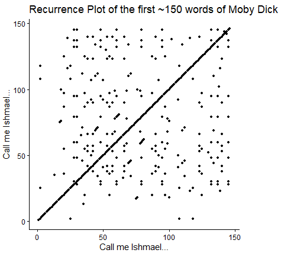
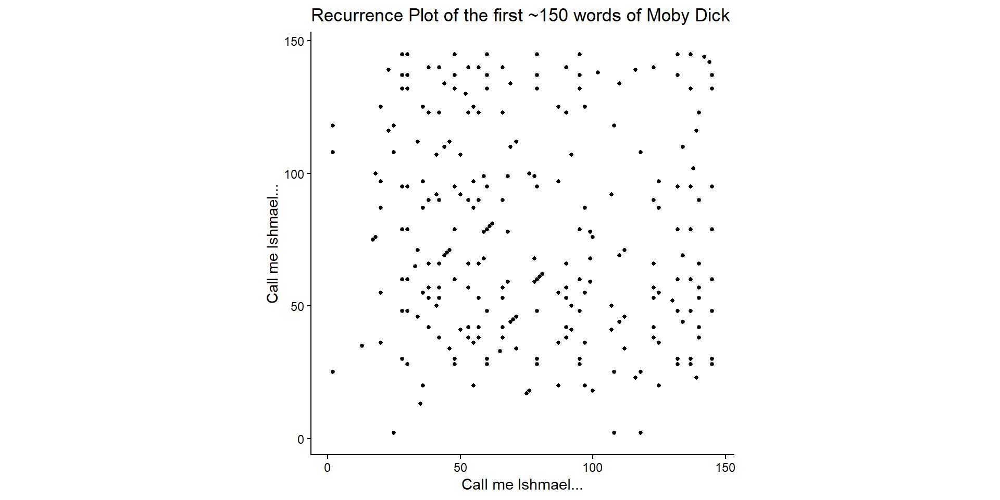

a tutorial in R
2026-11-16
To recur is to pass through a similar state at a later point in time (e.g., I was hungry, then I ate. In a few hours, I will return to a state of being hungry).
Recurrence is a ubiquitous feature in natural systems.
Ok, so what?
Well, we all work with human data, and humans, being natural systems, also display recurrence at every level. We’re all very grateful for recurrence in the states of the muscles in our hearts, for example.
Human behavior also tends to recur, and through the arcane rites of Recurrence Quantification, we can learn about how behavior is organized.
Any kind, as long as it is temporally organized!
t1, t2, t3, t4, etc…
Patterns of recurrence are patterns in time, so we need data that has temporal structure.
This could be…
data -> RP -> metrics
maybe look at wallot and leonardi flow chart
tidyverse is going to help us keep everything organized crqa is how we’ll run the recurrence analysis
Again, in principle, this could be any kind of data, but these make for a convenient example
Parameters determine how the data is transformed into an RP and how the RP is quantified.
For categorical data, we can use standard values.
Just show picture example here
Embedding and delay are sort of like 3d glasses
Boats Attacking Whales, Thomas Beale 1839
From this…
Call me Ishmael. Some years ago- never mind how long precisely- having little or no money in my purse, and nothing particular to interest me on shore, I thought I would sail about a little and see the watery part of the world. It is a way I have of driving off the spleen and regulating the circulation. Whenever I find myself growing grim about the mouth; whenever it is a damp, drizzly November in my soul; whenever I find myself involuntarily pausing before coffin warehouses, and bringing up the rear of every funeral I meet; and especially whenever my hypos get such an upper hand of me, that it requires a strong moral principle to prevent me from deliberately stepping into the street, and methodically knocking people’s hats off- then, I account it high time to get to sea as soon as I can.
to this

The RP is an element inside the moby_for_plot object, and we call it inside the plotting function using the $ operator
Ok, so now we want to go from our plot…
to metrics describing the plot
First, we need to run our analysis again with one parameter changed (tw = 1), and save them to a new object (moby_for_metric)
if we plotted this updated version, it would look like this

Then we need to make a home for our metrics (moby_output) and then extract the metrics from our new object.
| RR | DET | NRLINE | MaxL | L | ENTR | LAM | TT |
|---|---|---|---|---|---|---|---|
| 1.163445 | 7.258065 | 6 | 4 | 3 | 1.098612 | 0 | NaN |
And Death Shall Have No Dominion Dylan Thomas
And death shall have no dominion. Dead men naked they shall be one With the man in the wind and the west moon; When their bones are picked clean and the clean bones gone, They shall have stars at elbow and foot; Though they go mad they shall be sane, Though they sink through the sea they shall rise again; Though lovers be lost love shall not; And death shall have no dominion. … img: White Horse tavern, Wikipedia
Verna Hills
The wheels on the bus go round and round
Round and round
Round and round
The wheels on the bus go round and round
All through the town
Ok, so we’ve got some plots. But what we really want is numbers describing those plots. So we need to run the crqa function for death and wheels again with tw = 1
Now we can pull out the metrics from both:
death_output <- data.frame()
death_output <- rbind(death_output,
cbind("RR" = death_for_metric$RR,
"DET" = death_for_metric$DET,
"NRLINE" = death_for_metric$NRLINE,
"MaxL" = death_for_metric$maxL,
"L" = death_for_metric$L,
"ENTR" = death_for_metric$ENTR,
"LAM" = death_for_metric$LAM,
"TT" = death_for_metric$TT))wheels_output <- data.frame()
wheels_output <- rbind(wheels_output,
cbind("RR" = wheels_for_metric$RR,
"DET" = wheels_for_metric$DET,
"NRLINE" = wheels_for_metric$NRLINE,
"MaxL" = wheels_for_metric$maxL,
"L" = wheels_for_metric$L,
"ENTR" = wheels_for_metric$ENTR,
"LAM" = wheels_for_metric$LAM,
"TT" = wheels_for_metric$TT))| RR | DET | NRLINE | MaxL | L | ENTR | LAM | TT | |
|---|---|---|---|---|---|---|---|---|
| wheels | 7.388889 | 52.631579 | 140 | 9 | 4.000000 | 1.5231536 | 14.28571 | 3.8 |
| moby | 1.163445 | 7.258065 | 6 | 4 | 3.000000 | 1.0986123 | 0.00000 | NaN |
| death | 2.317554 | 42.553191 | 58 | 12 | 4.137931 | 0.8167753 | 0.00000 | NaN |
| RR | DET | NRLINE | MaxL | L | ENTR | LAM | TT | |
|---|---|---|---|---|---|---|---|---|
| wheels | 7.388889 | 52.631579 | 140 | 9 | 4.000000 | 1.5231536 | 14.28571 | 3.8 |
| moby | 1.163445 | 7.258065 | 6 | 4 | 3.000000 | 1.0986123 | 0.00000 | NaN |
| death | 2.317554 | 42.553191 | 58 | 12 | 4.137931 | 0.8167753 | 0.00000 | NaN |
Go forth and perform RQAs in my name.
Cognitive Science Colloquium